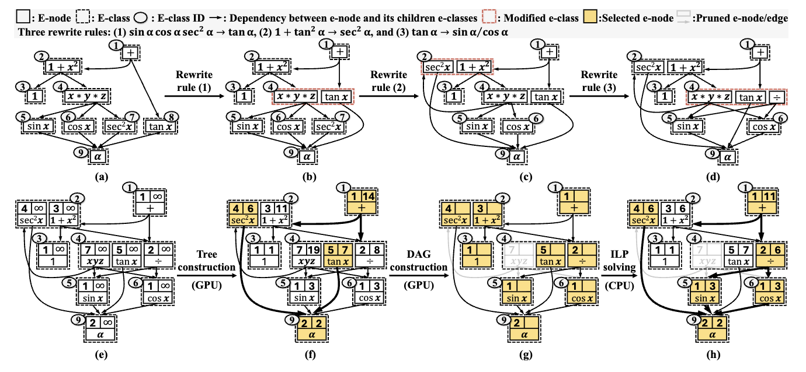
XEG: A GPU-Parallel Algorithm for Efficient and Effective E-Graph Extraction
ACM International Conference on Architectural Support for Programming Languages and Operating Systems (ASPLOS), 2027
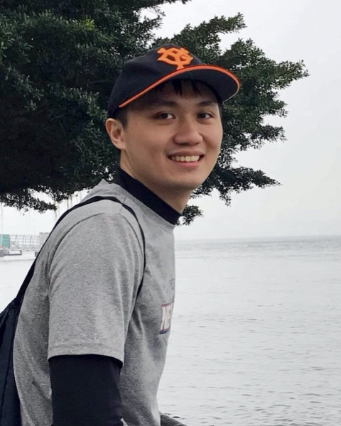
I am a Member of Technical Staff at Ricursive Intelligence, while completing my Ph.D. at the Georgia Tech Computer-Aided Design Lab (GTCAD) under the supervision of Prof. Sung Kyu Lim.
My research advances Electronic Design Automation (EDA) for 2D and 3D integrated circuits by combining machine learning, LLM-driven optimization, and accelerated computing — toward faster, smarter physical design flows. I received my B.S. in Electrical Engineering from National Taiwan University and my M.S. in Electrical Engineering and Computer Science from the University of California, Irvine.
Industry & research appointments


Selected peer-reviewed work

ACM International Conference on Architectural Support for Programming Languages and Operating Systems (ASPLOS), 2027
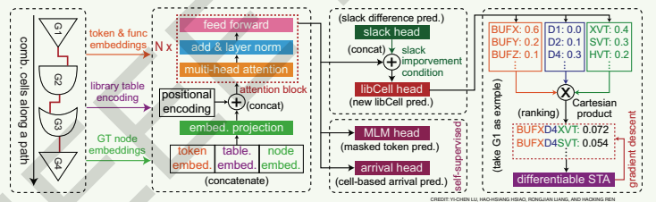
IEEE Solid-State Circuits Magazine (MSSC), 2026 · * Corresponding author
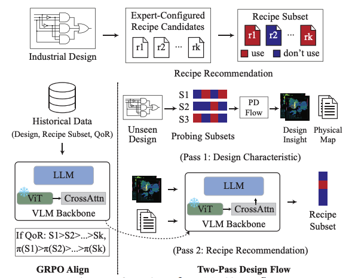
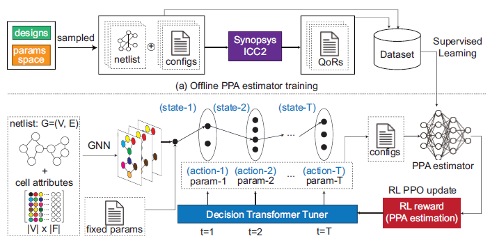
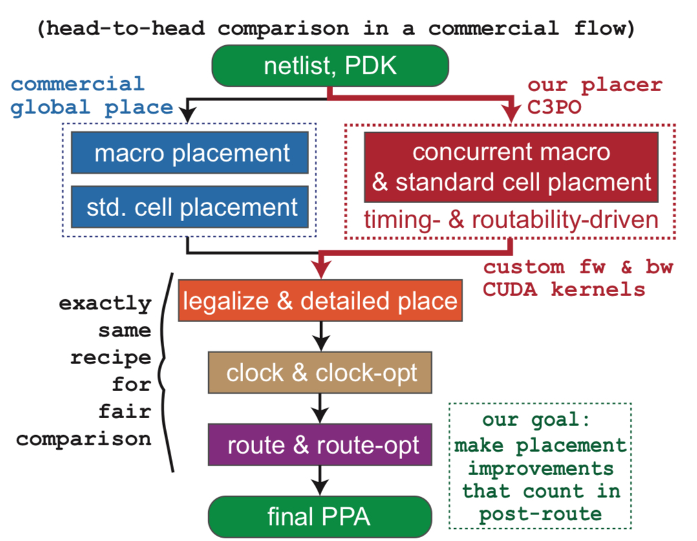
31st IEEE/ACM Asia and South Pacific Design Automation Conference (ASP-DAC), 2026
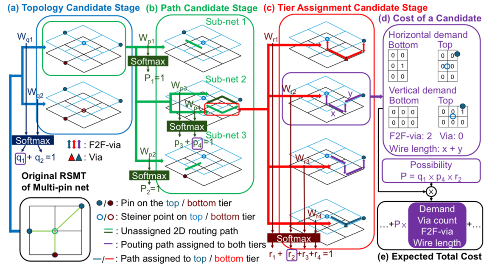
31st IEEE/ACM Asia and South Pacific Design Automation Conference (ASP-DAC), 2026
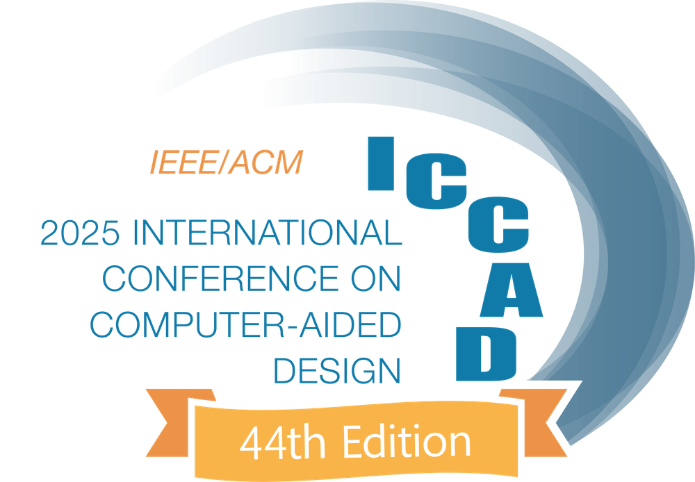
44th IEEE/ACM International Conference on Computer-Aided Design (ICCAD), 2025
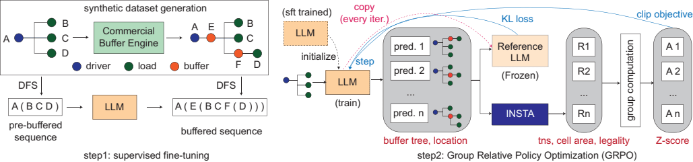
44th IEEE/ACM International Conference on Computer-Aided Design (ICCAD), 2025
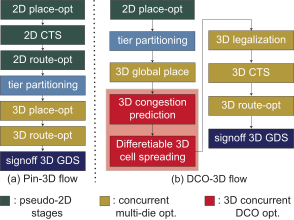
62nd ACM Design Automation Conference (DAC), 2025
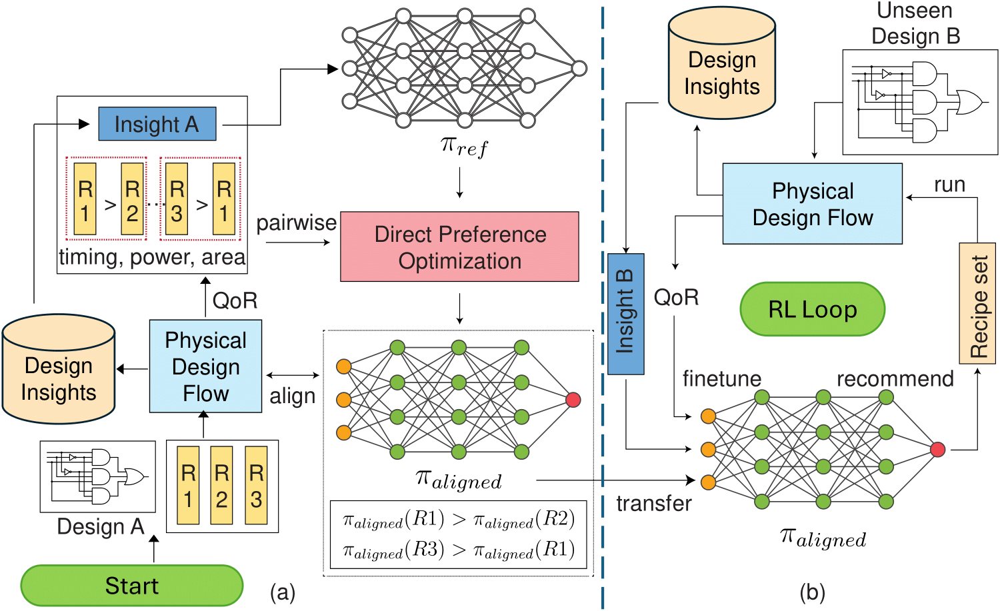
62nd ACM Design Automation Conference (DAC), 2025
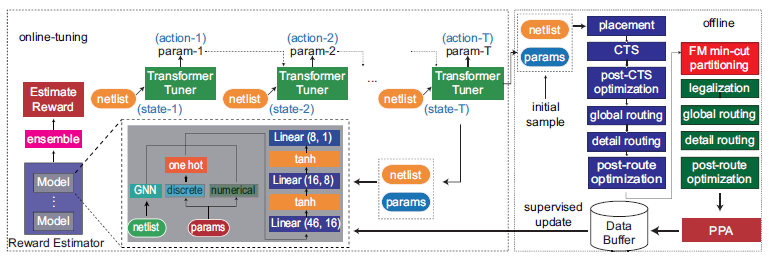
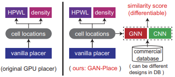
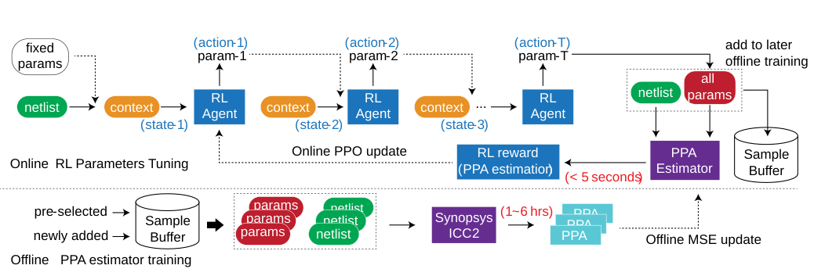
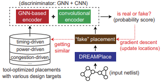